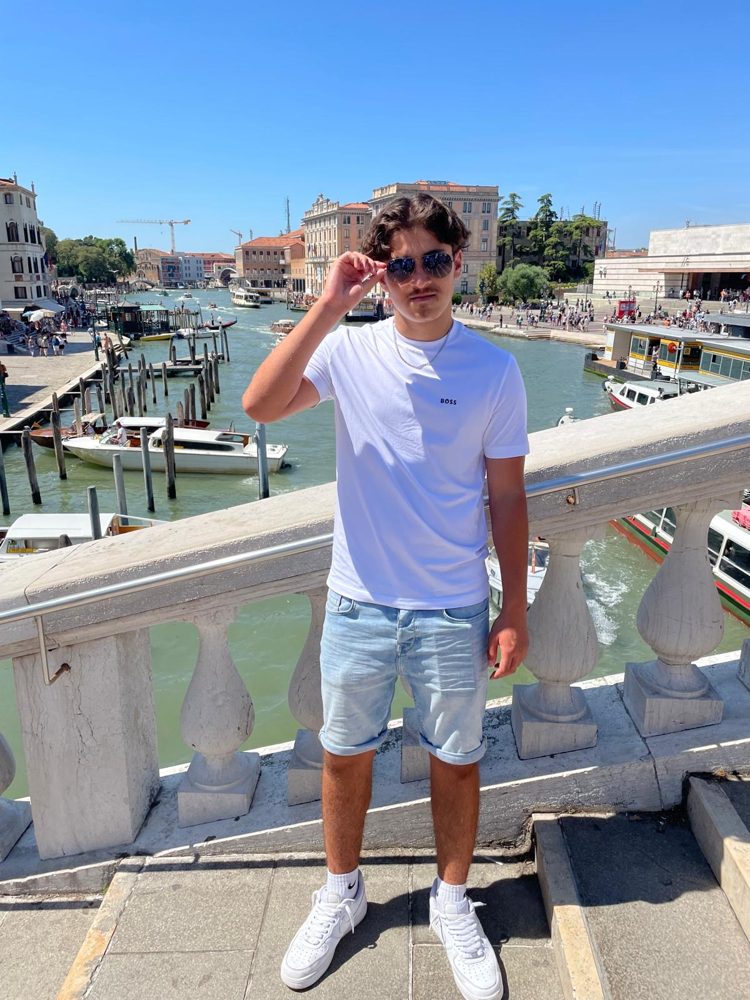
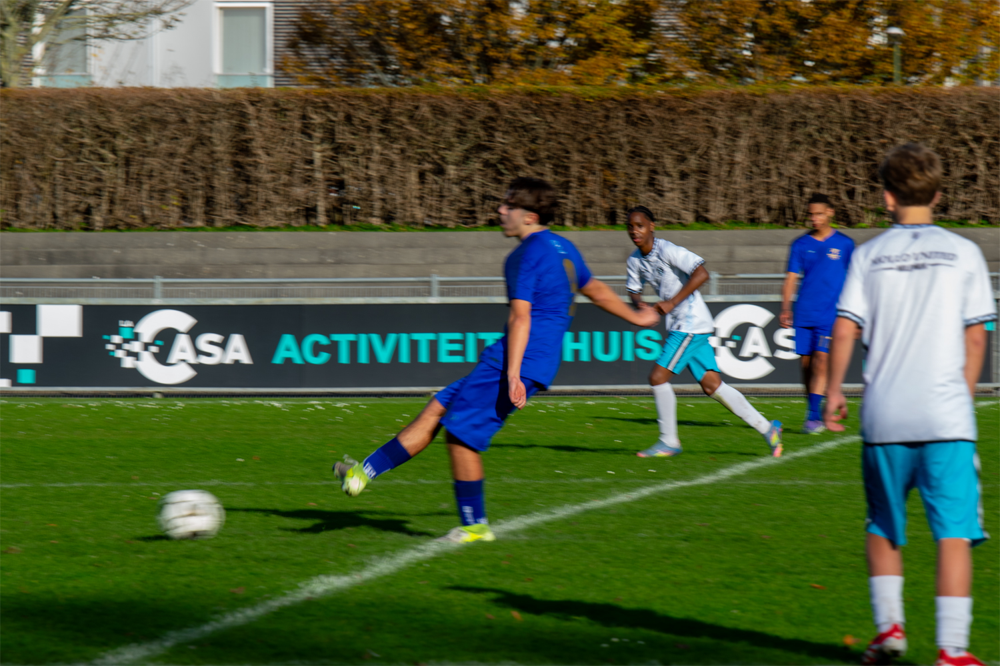

- 
- 
-

Hallo deze website heb ik gemaakt voor het vak informatica.
Ik ben Enis en ik ben 15 jaar en zit op VWO 4 op ISW Hoogeland.
Mijn afkomst is Bulgaars Turks en ik woon nu in Naaldwijk.
We wonen met ze vieren in een huis, mijn vader, mijn moeder, mijn zusje en ik. Ook heb ik een hond, Jacky.
Ik zit op voetbal bij Westlandia, sinds dat ik 5 jaar oud zit ik op voetbal.
Sinds mijn 10de speel ik bij Westlandia en ik heb het erg naar mijn zin. Als bijbaan werk ik bij de Albert Heijn in Naaldwijk.